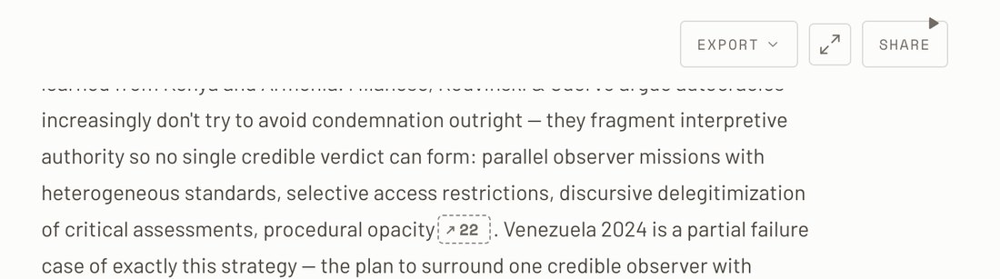
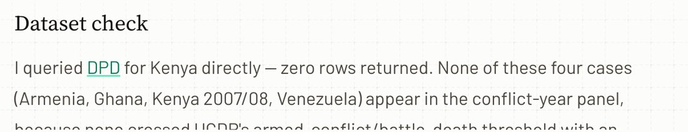
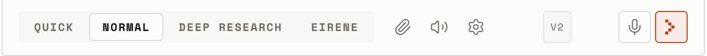
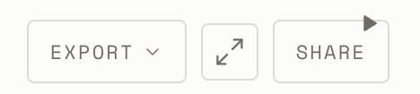
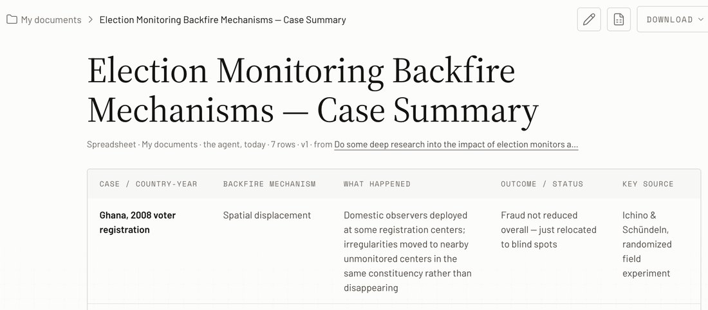
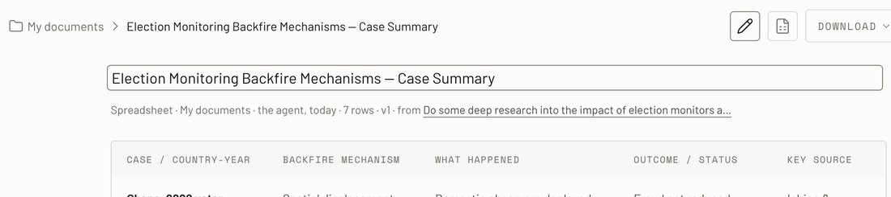
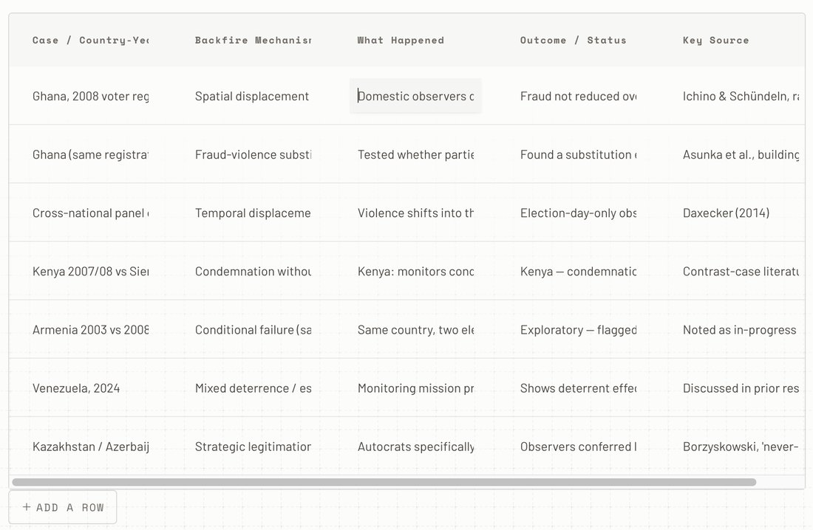
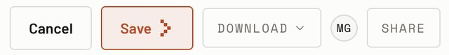

Five parts. A to C answer his first reply; F and S his second. A: his calls that turn out to match the handoff, so there is nothing to decide. B: the “your organisation” rule, explained. C: where dev differs from the design, including four things in your screenshot that he did not mention. In each pair the handoff is on the left and dev on the right. Dev is either cropped from your screenshot or mocked from his description, and each caption says which.
A1 fields, A2 the questionnaire, A3 citation numbers, A4 no reference list, A5 the project page’s layout, A6 context and the library, A7 reports, A8 search previews, A9 the site’s routes.
B1 who “your organisation” lets in, who it keeps out, and the four questions worth asking him before it ships.
C1 the fade under the toolbar, C2 the search-hit outline, C3 search with nothing typed, C4 Share’s initials, C5 Invite’s error, C6 Export on a project. From your screenshot: C7 a green link, C8 the boxed badge, C9 a stray triangle.
He lists these as calls he made where the handoff was silent, but each is in the prototype or in CONSOLE.md already. They are drawn here so you can see that, not to reopen them.
--ink-35 and the field lifts by the lowest shadow. No ring. The composer does the same, more strongly: it lifts to --elev-3.Dev, in his words: “No orange focus ring on inputs (focus is ink border + lift).” That is the left-hand field. Production’s orange ring, the thing you asked to be noted, is what he removed.
Observers deter fraud where they are trusted , and can raise violence where they are not .
Kenya 2007 fits the second pattern , as Hyde predicts .
Observers deter fraud where they are trusted , and can raise violence where they are not .
Kenya 2007 fits the second pattern , as Hyde predicts .
…as Hyde predicts .
1. Hyde, S. D. (2011). The Pseudo-Democrat’s Dilemma.
2. Daxecker, U. (2012). The Cost of Exposing Cheating.
…as Hyde predicts .
The prototype has the same order: the name, the description, the composer, then Chats and Artifacts.
In the prototype the whole middle of a project page, toolbar included, is --ground-2. “The header has the same ground as the main area” is that.
The prototype’s project page has no Expand either: there is no chat to widen.
Context in the prototype is a table with a remove cross on each row and no on/off toggle. Listed means in use.
The prototype takes a file dropped anywhere on the console (Pl. 14, “dropping a file on the console”).
Add opens the library in the pane with an add button on each paper.
“The library beside a chat holds what the chat cites”, web pages and datasets included, each with its tier. Your screenshot shows it: 23 cited, the web ones dashed.
The rail’s magnifying glass opens it, and so does ⌘K: the same as the prototype. “All” also takes in uploaded files and documents, which the prototype’s finder does not search. That is a sensible widening.
home.html). The old landing pages are gone.noindex and out of the site’s navigation, so only people with the link find it.
Share has three settings for General access: only the people listed, your organisation, or
anyone with the link. The handoff never said what “organisation” means. Nathanael’s
rule: a signed-in person whose email ends in the same domain as the owner’s, and never
for free email (Gmail, Outlook and the like). Here is what that does if you share a project
from matt@effectivepeace.org.
.org and .net, or a country office) is split in two.Is the email verified at sign-in? If someone can sign up as anything@effectivepeace.org without proving they own the inbox, the rule lets anyone in. This is the one that matters.
What does a Gmail owner see? Best: the option is not offered at all.
Can the label name the domain? “Anyone at effectivepeace.org” says exactly who gets in. “Your organisation” makes people guess.
Big domains. Is there a plan for un.org, gov.uk and the like? For the beta, a short block list is enough.
My recommendation: keep his rule, provided Ask 1 is a yes. Then ask for the domain in the label (Ask 3) and for the option to be hidden from free-email owners (Ask 2). The design change is one line of copy in Share’s select.
Each pair shows the handoff on the left and dev on the right. Under each is what the difference costs and what I would do about it.
In the prototype the toolbar has the page’s own ground behind it, and a 32px fade hangs under it. Scrolled text dissolves before it reaches the buttons, the same way it does above the composer (Rev 51). Scroll a long chat in console.html to see it.
.app-scroll > .app-tools::after
What it is. Search has two ways in, the same window. From anywhere (the rail’s magnifier or ⌘K) it finds which chat, project or artifact; picking one opens it. From inside a chat (the toolbar’s search, or ⋯ on a phone) it starts on This chat and lists each message that contains the words, with the line quoted and the words in bold. Picking one closes the window and scrolls the thread to that message. The mark is for that moment: the quoted line has gone, so the thread has to show what you jumped to. It stays until you search again.
What is wrong with the handoff’s. You saw it: the box has 4px corners, but the outline sits 8px outside it, and an outline’s corners grow by that gap. What renders is about 12px, three times the system’s corner. A box hairline round a message is also the only boxed message in the console: the answer is never boxed anywhere else.
What it costs. Any of these is a line or two of CSS. Dev has none of them now (C2 · C).
Where observers are trusted, fraud falls; where they are not, violence can rise. Kenya 2007 fits the second pattern.
Where observers are trusted, fraud falls; where they are not, violence can rise. Kenya 2007 fits the second pattern.
Where observers are trusted, fraud falls; where they are not, violence can rise. Kenya 2007 fits the second pattern.
Where observers are trusted, fraud falls; where they are not, violence can rise. Kenya 2007 fits the second pattern, and so, less clearly, does Kenya 2013.
--hl-find, ink at 12%), and the thread scrolls so the first one is in view. Grey, because the orange highlighter (--hl) already means “the passage a citation points to”. My pick now: it shows which message and where in it, so it needs no box. Cost: more than a line of CSS, since the words have to be found in the rendered answer; the browser’s highlight API (::highlight) does it without touching the markup.Enter an email address, such as name@organisation.org.
The prototype’s project page has Share only; Export lives on a chat. He has added Export to the project page. It is not obvious what exporting a whole project produces (every chat? every artifact? a zip?). Ask him what it exports. If he has no clear answer, take it off until there is one.
I queried DPD for Kenya directly: zero rows returned.


Your verdict was “internal; keep, super minimal: bare mono, no box”. Dev draws it as a boxed button the size of the microphone, so it reads as a control. One line of CSS: .cb-ver.

A black play triangle on Share’s top edge. Most likely the answer’s read-aloud button, scrolled up under the toolbar and drawn on top of it, which would also explain C1. Worth sending him this crop.
The orange keyboard ring was never retired: it is the system’s focus ring, on every control, set once in components.css. It appears only when someone moves through the page with the Tab key, never on a click, which is why you have not seen it. Press Tab on this page to see it live. If orange is for calls to action and citations only, three things in the console change (F1, F2). Everything in F3 is the citation family and stays.
components.css, and one in the question option’s rule.--ink-55, like every other numeral in mono.The chips in an answer, the sources strip in its foot, the sources count on a phone, and the underline a citation draws under the pointer.
The filled and hollow marks beside a paper in the library, the context table and the quick view. Web sources are already grey and dashed.
The orange highlighter on the passage a citation points to, in a paper’s full entry. The search highlight is grey for this reason.
The tint: every call to action, Send, Invite, Next, Save.
Not the console, so not touched: the marketing pages’ callout rule, Home’s audience blank, the checkmarks in a proof list and Rotary’s step numbers. Say if you want the same rule taken through them.
The prototype draws a spreadsheet artifact to read, rename and download; editing its cells was never designed. Dev’s reading view is the handoff’s. The two ways of editing are where it drifts: the table changes shape, the title shrinks, and an unlabelled icon starts it.

The title at the handoff’s size, the meta line, the table on a hairline with mono column heads on the set-back tone and the first column bold. The Download menu (Excel, CSV) and the Share panel match the handoff too.

.pj-rename). Enter keeps it, Escape puts it back. One gap in our own prototype: its rename is a one-line box, so a title that runs to two lines scrolls inside it. Production should let it wrap.
| Case | Mechanism | What happened |
|---|---|---|
| Ghana, 2008 voter registration | Spatial displacement | |
| Cross-national panel data | Temporal displacement | Violence shifts into the pre-election period, before monitors arrive |

The right pair: a ghost Cancel and the tint Save. They are the full-size buttons, taller than Download and Share beside them; in the toolbar they take .sm so the row lines up.